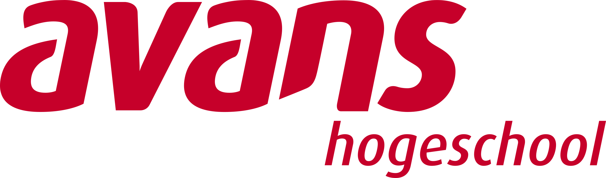

Discaimer
Al het hier gepresenteerde materaiaal is onder voorbehoud van nader te bepalen leerdoelen en inhoudelijke inhoud.
Inleiding
Welkom bij deze vabok cursus Robotica in Python! In deze cursus leer je de basisprincipes van robotica en hoe je robots kunt programmeren met behulp van de programmeertaal Python. We zullen verschillende onderwerpen behandelen, waaronder:
Basisconcepten van robotica
Sensoren en actuatoren
Bewegingsplanning
Robotbesturing
Praktische toepassingen van robotica
Deze cursus is ontworpen voor beginners, dus je hebt geen voorkennis van robotica of programmeren nodig. We zullen stap voor stap door de concepten en technieken gaan, met veel voorbeelden en oefeningen om je te helpen de stof te begrijpen.
Veel succes en plezier bij deze cursus.